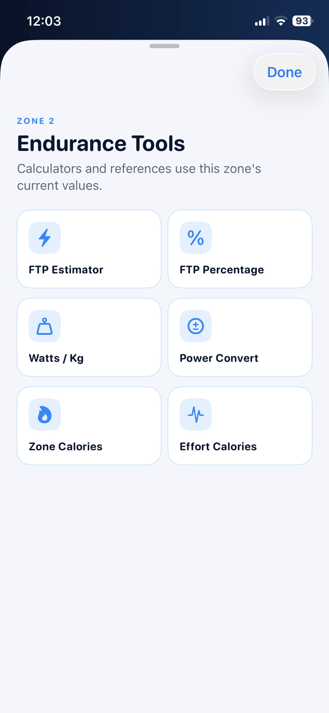
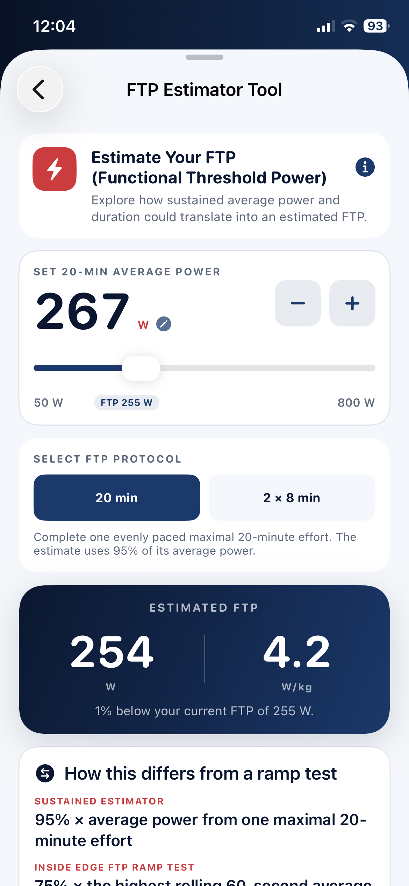
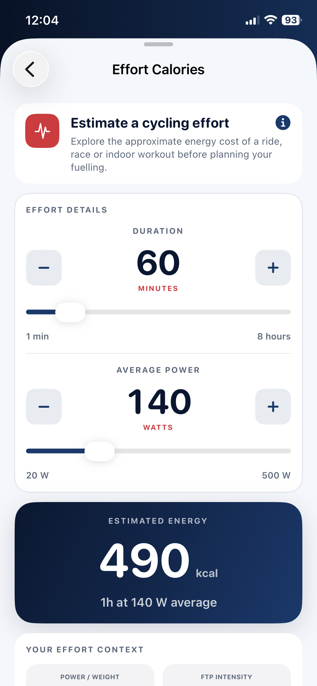

What benchmark does this effort suggest?
Compare recognised sustained-power protocols and understand how the estimate differs from a progressive ramp test.
Practical cycling tools
Explore power, W/kg, FTP percentage, workout bias and estimated energy without opening a spreadsheet. Every result is placed back into the context of your own rider profile and training zones.

Tools with a reason
These are not calculators for the sake of producing more data. Each one answers a practical training question.
Compare recognised sustained-power protocols and understand how the estimate differs from a progressive ramp test.
Translate a percentage into personal watts, W/kg, training zone and perceived effort.
Move between watts and W/kg while keeping FTP percentage and zone context visible.
Preview an intensity adjustment before training and see its revised power and W/kg target.
Explore an approximate energy range using the personalised power values for a selected zone.
Estimate energy from average power and duration for a ride, race or indoor workout.

Estimate, then validate
The estimator supports sustained testing while explaining the calculation behind each result. It also distinguishes those protocols from the app’s progressive ramp test, where the highest rolling 60-second power determines the estimate.
Plan the effort
The Effort Calories tool estimates the mechanical and metabolic energy associated with a planned ride. It is a practical planning aid—not a claim of laboratory precision—and keeps average power, time, W/kg and FTP intensity together.

Apply the result
Inside Edge Ride links numbers back to zones and training, so the result becomes an action rather than another isolated statistic.